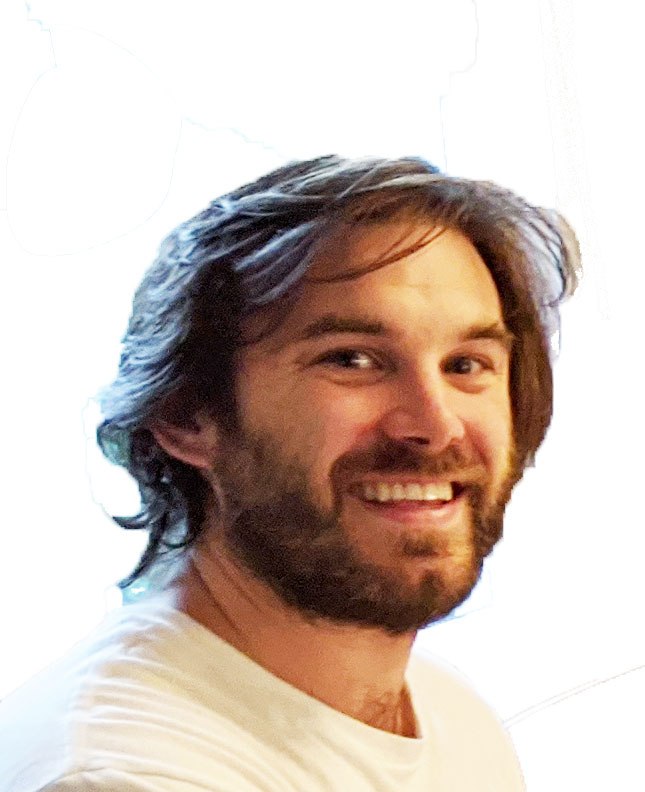

Earlier people directory
An archive of names, roles, and biographies from an earlier StellarDNN roster.
Members in the earlier directory
-

Shivas Jayaram
I teach deep learning courses on deploying models and building AI applications. Previously, I was co-founder and CTO of a deep learning startup.
-

Shuheng Liu
As the lead developer for NeuroDiffEq, I’m passionate about computer science, software engineering, and mathematics. In my spare time, I’m a huge fan of kayaking, cooking, rock music, and everything fun!
-
Hargun Oberoi
-
Joy Parikh
-

Cristobal Donoso-Oliva
Applies time series analysis and deep learning to astronomy.
-
Sakthisree Venkatesan
Contributed to core development of NeuroDiffHub and led campaigns on tech justice and intersectionality. The biography also describes an interest in building AI models, developing web applications, and solving problems.
Alumni in the earlier directory
-

David Sondak
I’m passionate about fluids and dogs. Apart from that, I’m a pretty simple person.
-
Maruan
-

Marios Mattheakis
I am passionate about physics, deep neural networks, and boxing. Other than that, I am normal.
-
Michael Emanuel